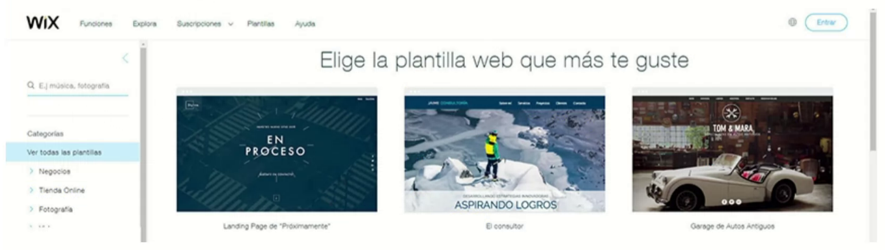

Hemos visto que una página web se crea siguiendo estos dos pasos:
- Se diseña la página o páginas que componen un sitio web utilizando un editor HTML.
- Mediante un programa de FTP se colocan las páginas en un servidor para que todo el mundo pueda verlas.
Hay una segunda forma, que es la más usada para crear webs sencillas, que consiste en usar un creador de sitios web o "website builder", en inglés. Los creadores de sitios web son páginas web especializadas en crear otras páginas web. Permiten que cualquier persona, sin tener conocimientos avanzados, pueda publicar en la web de forma rápida y sencilla. Simplemente hay que elegir una plantilla (una página web prediseñada) y poner los textos y las fotografías. Hay muchas empresas que ofrecen este servicio: Wix.com (debajo puedes ver una imagen de su web), Wordpress.com, Weebly.com, etc. En las prácticas 4 y 5 de este capítulo utilizaremos una de estas herramientas: Google Sites.
